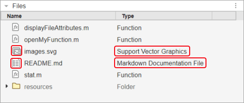

Customize How Files Display in MATLAB
You can customize how to display file types in MATLAB® using extension points.
Specify Icon and Label
You can customize the icon and label for file types in MATLAB. For each file type that you want to customize, define an object within the
mw.fileTypes.icons and mw.fileTypes.labels
extension points. To specify an icon, specify the object name as the extension of the file
type and the object value as the path to the icon. To specify a label, specify the object
name as the extension of the file type, and the object value as the label text. When adding
icons and labels for multiple file types, separate each object with a comma. For more
information, see mw.fileTypes.icons and mw.fileTypes.labels.
For example, this set of JSON declarations adds a custom icon and label for markdown
files (.md) and SVG files (.svg).
{
"mw.fileTypes.icons": {
"md": "./documentList.svg",
"svg": "./images.svg"
},
"mw.fileTypes.labels": {
"md": "Markdown Documentation File",
"svg": "Support Vector Graphics"
}
}Specify Filename Validation
You can add filename validation for file types. For each file type, define an object
within the mw.fileTypes.filenameValidation extension point. When adding
filename validation for multiple file types, separate each object with a comma.
Within each file type object, define one or more errorRegexPatterns
or warningRegexPatterns objects, separating each object with a comma.
Include an errorRegexPatterns or warningRegexPatterns
object for each pattern that you want to validate for. Then, for each
errorRegexPatterns and warningRegexPatterns object,
specify a pattern to valid against, any validation flags, and the error or warning message
to display. For more information, see mw.fileTypes.filenameValidation.
For example, this set of JSON declarations adds filename validation for markdown files
(.md) to check whether the name of a markdown file is not empty or too
long when the file is created or renamed.
{
"mw.fileTypes.filenameValidation": {
"md": {
"errorRegexPatterns": [
{
"pattern": "/^.+$/;",
"flags": "ig",
"errorLabel": "Filename must not be empty"
}
],
"warningRegexPatterns": [
{
"pattern": "/^.{0,125}$",
"flags": "ig",
"warningLabel": "Filename is too long"
}
]
}
}
}Create Groups of File Types
You can create groups of file types in MATLAB using the mw.fileTypes.groups extension point. Creating
groups allows you to customize multiple file types at the same time.
To create a group of file types, define an object within the
mw.fileTypes.groups extension point. Specify the object name as the
name of the group that you want to create and the object value as an array of file type
extensions that you want to include in your group. When creating multiple groups, separate
each object with a comma. Then, to use the group to customize multiple file types at the
same time, specify groups. instead of
a file type extension. For more information, see groupnamemw.fileTypes.groups.
For example, this set of JSON declarations creates a group for markdown files
(.md) and SVG files (.svg), and then customizes the
icon and label for the group.
{
"mw.fileTypes.groups": {
"myfiletype": [
"md",
"svg"
]
},
"mw.fileTypes.icons": {
"groups.myfiletype": "./images.svg"
},
"mw.fileTypes.labels": {
"groups.myfiletype": "My file types"
}
}Enable Your File Type Customizations
To enable your file type customizations, add the folder containing the
resources folder with the extensions.json file to
the path. When the folder is added to the path, files with a .md or
.svg extension appear in the Files panel with the icon and label
specified in extensions.json. If the Type column is
not visible in the Files panel, go to the top-right corner of the panel, click the Files
actions button  , and select Show > Type.
, and select Show > Type.

See Also
mw.fileTypes.icons
Extension Point | mw.fileTypes.labels
Extension Point | mw.fileTypes.groups
Extension Point | mw.fileTypes.filenameValidation Extension Point